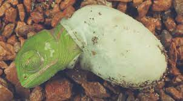

Area donde Habitan
Los investigadores de la evolución presuponen que los camaleones ya existían en el período cretácico. En aquel entonces, estaban más extendidos que ahora. A lo largo de millones de años, los lagartos se adaptaron a diferentes condiciones de vida y se produjeron nuevas especies y una creciente variedad de formas. En la actualidad, habitan sobre todo en África Central y Madagascar. Aquí se concentra el 80 % de las especies que se conocen hoy en día. También hay poblaciones más pequeñas en el sur de España, en algunas islas del Mediterráneo, en el Oriente Próximo e incluso en Sri Lanka. Los camaleones habitan en selvas tropicales y oasis, en desiertos y en arbustos de las sabanas. Viven tanto en las ramas de los árboles como en las ramitas de arbustos más pequeños o en el suelo.
Aspecto
Impresionantes, extraños y fascinantes: los camaleones son conocidos por sus deslumbrantes y coloridos rostros. Pero no todas las especies son coloridas, también hay representantes más discretos. Son animales muy diversos: algunas especies tienen la cabeza en forma de cascos característicos, hocicos largos e incluso pequeños cuernos en sus narices. Otras especies tienen una llamativa cresta con escamas a lo largo de la columna vertebral, la garganta o el abdomen. Algunas especies tienen escamas de forma regular por todo el cuerpo, otras las tienen de diferentes tamaños y formas dependiendo de la parte del cuerpo. La diversidad es infinita.
El camaleón típico está bien adaptado a la vida en los árboles y los arbustos. La cola puede llegar a ser muy larga y medir más que el largo del cuerpo. Esta le sirve como un quinto miembro para agarrarse. Por el contrario, las colas de los camaleones enanos y terrestres son mucho más cortas. Los dedos de los camaleones típicos tienen forma de pinza y por lo tanto son ideales para escalar. Las escamas especiales proporcionan una sujeción adicional.
Estado de Conservacion
La mayoria de especies de camaleon no se encuentran en peligro de extincion sin embargo hay algunas excepciones como el camaleon del gran desierto el cual en su momento era muy codiciado como mascota
rasgos físicos
Ojos del Camaleon
Los ojos del camaleón son una característica muy admirada, pues pueden moverse de forma independiente. De este modo, puede mirar en dos direcciones diferentes y aun así hacerse con una imagen de su entorno. Los ojos del camaleón sobresalen de las cuencas y están completamente rodeados por párpados. Solo en el medio queda un espacio libre para la pupila. Parece imposible, pero a través de esa apertura redonda, puede ver con mucha precisión.
El cristalino del camaleón tiene una característica especial que es única en el reino animal. La luz incidente no está agrupada como en el caso de los humanos, sino que está dispersa. Esto significa que un objeto que se está viendo se proyecta en la retina en un tamaño inusualmente grande, y el ojo puede enfocarlo con mucha nitidez. Es similar al zoom en una cámara de fotos. Los expertos dicen que los camaleones pueden ver con claridad hasta un kilómetro de distancia. Además, pueden cambiar la forma de su cristalino (hasta 30 dioptrías) para poder estimar la distancia de su presa con precisión. Así, determinan hasta dónde debe sobresalir la lengua para atrapar a la presa
La lengua de los camaleones
Otra característica típica del camaleón es la lengua protráctil. Esta es casi tan larga como el cuerpo del animal, pero en algunas especies puede ser más larga. Es húmeda y musculosa y tiene una fuerza de tracción muy grande. Así, el camaleón saca su lengua en fracciones de segundo y la dispara hacia su presa que, en la mayoría de los casos, no tiene posibilidades de huir. Se podría suponer que el camaleón tiene una secreción a la que la presa se adhiere. En realidad, es un efecto de ventosa entre el animal y la punta de la lengua, causado por el movimiento de retorno y la tensión muscular.
Dieta
La dieta del camaleón se basa principalmente en insectos, de hecho, su larga lengua ha evolucionado para cazar insectos distraídos o al vuelo, lanzándola como un proyectil pegajoso infalible. La lengua del camaleón puede alcanzar hasta los 6 metros por segundo. Pero dependiendo de la especie pueden comer algún vegetal, e incluso fruta.
En promedio un camaleon morado comeria de Recién nacido 10 a 15 insectos del tamaño apropiado para su boca a la semana y en su adultez de 5 a 7 insectos de tamaño regular a la semana.
Comportamiento
El comportamiento de los camaleones es muy interesante y diverso. Se relacionan a través de diferentes formas de expresión. Además de la coloración, los camaleones se comunican mediante siseos, silbidos, amenazas con la boca abierta, aplanamiento o hinchazón del cuerpo, gestos con la cola o movimientos de balanceo. La mayoría de los camaleones son solitarios. La socialización puede causar un gran estrés entre los reptiles y, en la mayoría de los casos, no es aconsejable.
Cambio de color
Los camaleones son maestros en el cambio de color. Cada especie tiene un espectro de colores y patrones individual. El cambio de color resulta más útil para comunicarse que para camuflarse y, sobre todo, indica el estado mental o de salud actual del animal. Los camaleones hembra, por ejemplo, indican su voluntad de aparearse por medio del color. Los machos señalan comportamientos territoriales y de poder. Las enfermedades también provocan cambios de color. Es un proceso complejo que tiene lugar dentro de las diferentes capas de la piel. El camaleón puede llevar a cabo el cambio de color con la ayuda de tintes y partículas refractarias a la luz.
Ciclo Reproductivo
El Camaleón común presenta una reproducción ovípara que ocurre durante un único ciclo reproductor al año, coincidiendo con los meses estivales. Cada año, la estación reproductora comienza con la formación de parejas e inicio de los cortejos. Este periodo abarca desde finales de julio a mediados de septiembre.
El cortejo incluye dos pautas bien diferenciadas. En primer lugar, la exhibición (o display) del macho en lugares bien visibles y generalmente, muy próximo a la hembra. Para ello, el macho comprime su cuerpo lateralmente mostrando uno de sus flancos, se orienta perpendicularmente con respecto a la posición que ocupa la hembra e hincha sus pulmones. El macho suele enroscar la cola y exhibe una librea (o coloración específica) de 'macho en celo' caracterizada por un color verde oscuro intenso con manchas difusas de color negro. Este comportamiento está fuertemente ritualizado y dura poc o tiempo (por lo general, un par de minutos). Con este comportamiento los machos tratan de aparentan un mayor tamaño corporal lo que posiblemente les confiere un mayor atractivo sexual durante el cortejo. El segundo componente del cortejo se caracteriza por el cuidado, vigilancia y persecución de la hembra. El macho persigue a la hembra en sus desplazamientos, sin perderla de vista y a veces, literalmente tras sus pasos, pudiendo recorrer juntos varias decenas de metros en un sólo día.
La puesta tiene lugar entre 34 y 40 días después de la cópula y se extiende desde mediados de Septiembre a finales de Octubre. Para ello, la hembra excava una galería de profundidad e inclinación variables y que depende de las características del terreno y sobre todo, de su humedad. Depositan allí de 4 a 40 huevos. Los huevos son elípticos, flexibles y de cáscara blanca. La hembra invierte aproximadamente dos días en excavar el nido, depositar los huevos y tapar todo adecuadamente.
Las crías aparecen al verano siguiente (meses de Julio, Agosto y Septiembre) tras un periodo de incubación de casi un año. Estas alcanzan la madurez sexual durante el primer año de vida por lo que al verano siguiente podrán reproducirse y así, completar el ciclo.
Lista de ejemplos de especies de Camaleones
| Subfamilia | Genero | Especie | Ubicacion |
|---|---|---|---|
| Chamaeleoniae | Bradypodion | adolfifriderici | Rift Albertino |
| Chamaeleoninae | Calumma | parsonii | Madagascar |
| Brookesiinae | Brookesia | Nana | Madagascar |
| Chamaeleoninae | Chamaeleo | Dilepsis | Africa Central |
| Chamaeleoninae | Furcifer | Bifidus | Madagascar |
| Brookesiinae | Rhampholeon | chapmanorum | Malawi |